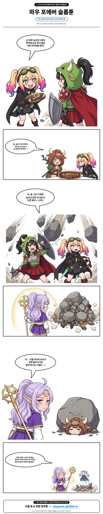
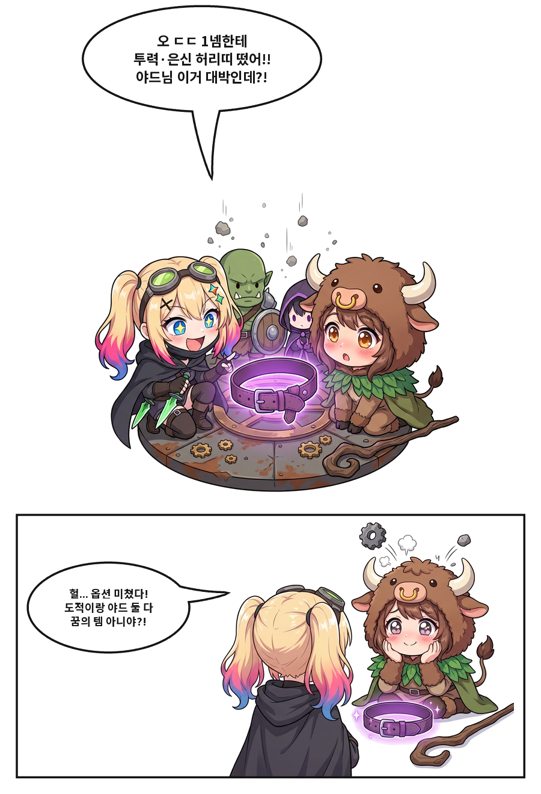
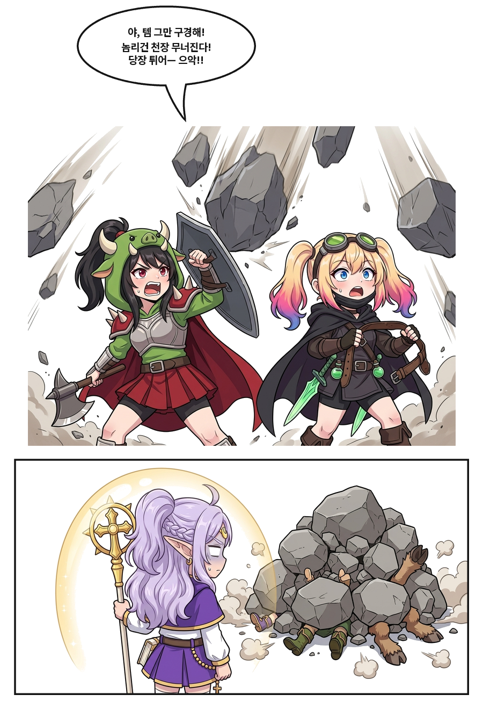
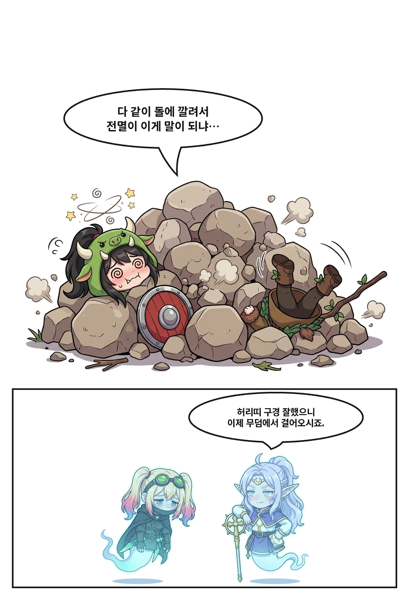

6컷
6컷
오늘자 RP, 상상도 못한 편지.jpg
길드 창설 RP 편지 반송 대참사와 우체통 폭풍 오열 — 100% 모험 상황극
드워프 사냥꾼타우렌 드루이드노움 도적오크 전사
1넴 보라 허리띠 구경하다 파티 전원 돌무더기 압사 — 100% 놈리건 던전 상황극




6컷
길드 창설 RP 편지 반송 대참사와 우체통 폭풍 오열 — 100% 모험 상황극
 6컷
6컷
수도원 주특입 8바퀴 천템 전쟁과 착한 보기님 — 100% 인던 상황극
 6컷
6컷
인던 주사위가 안 뜨는 순진 뉴비 법사님과 마스터 루터 대참사 — 100% 길드 상황극
버튼 한 번으로 [와포슬롭툰] 제목 + 본문/정주행 링크 복사, 통합본 JPG 다운로드, 공식 포에버갤 글쓰기창 새 탭 열기를 동시에 준비합니다. (로그인·캡차 확인 및 최종 등록은 공식 페이지에서 직접 완료해 주세요.)
[와포슬롭툰]놈리건 천장 압사 사건
와우 포에버 슬롭툰 EP.3 — 놈리건 천장 압사 사건 1넴 보라 허리띠 구경하다 파티 전원 돌무더기 압사 — 100% 놈리건 던전 상황극 원본 포에버갤 개념글 (#89934): https://gall.dcinside.com/mgallery/board/view/?id=wowforever&no=89934&exception_mode=recommend&page=1 전편 정주행 아카이브: https://slopwow.github.io/episodes/ep003.html 전체 정주행: https://slopwow.github.io ※ 시안 C 귀염뽀짝 9×9 미소녀 상황극 봇 (순수 팬메이드 패러디)